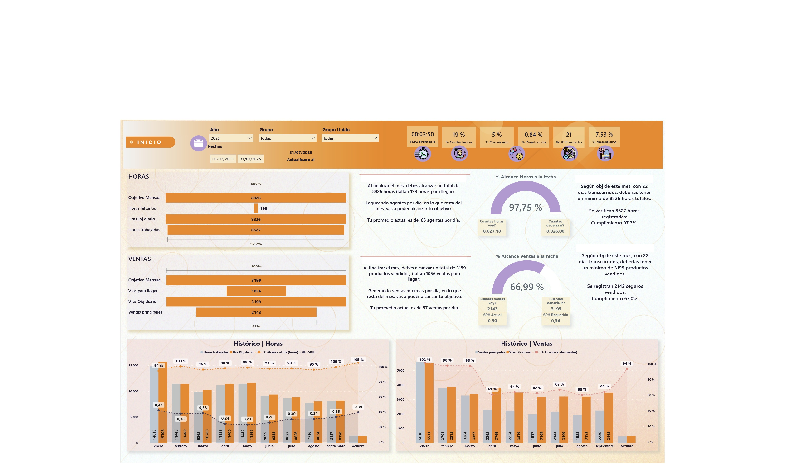
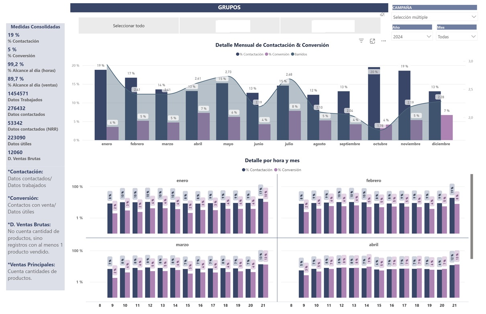
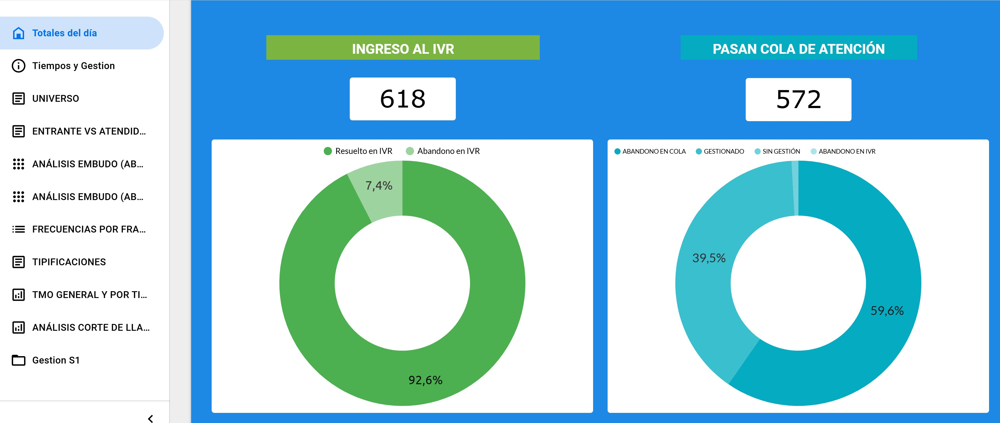
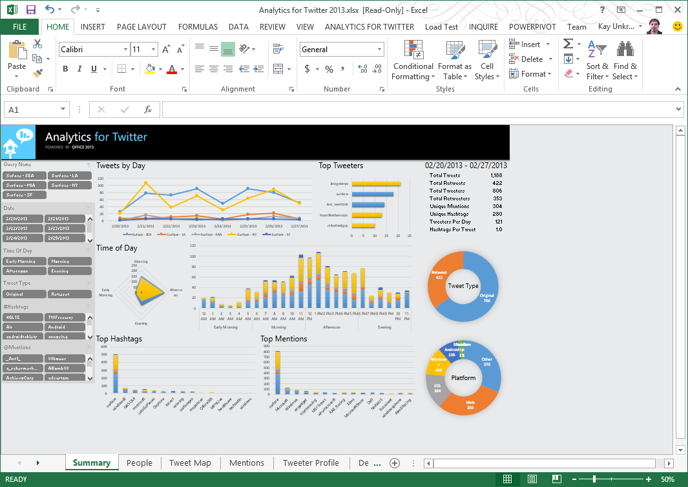

Resultados Visualizados: Nuestro Portafolio de Dashboards Inteligentes
Explora una selección de nuestros proyectos en Power BI, Looker Studio y Power Pivot, diseñados para ofrecer insights accionables en diversas áreas de negocio.
Dashboard Estratégico para Dirección

Desarrollo de un dashboard estratégico en Power BI para la alta dirección, consolidando métricas de diversas áreas (Ventas, Operaciones, Marketing) para facilitar la toma de decisiones a nivel ejecutivo.
Análisis de Métricas de Contact Center

Creación de un dashboard en Power BI para el análisis detallado de las métricas clave de un contact center, permitiendo identificar áreas de mejora en la eficiencia operativa y la satisfacción del cliente.
Análisis del Comportamiento del Usuario Web

Desarrollo de un dashboard en Looker Studio para analizar el comportamiento de los usuarios en plataformas web, identificando patrones de navegación y oportunidades para optimizar la experiencia.
Modelo de Datos para Análisis Financiero

Construcción de un modelo de datos robusto utilizando Power Pivot en Excel para realizar análisis financieros complejos, incluyendo análisis de rentabilidad y proyecciones.
¿Interesado en una solución de visualización de datos a medida para tu contact center o cualquier otra área de tu negocio? ¡Contáctanos para discutir tus necesidades!
Solicita una Consulta Gratuita